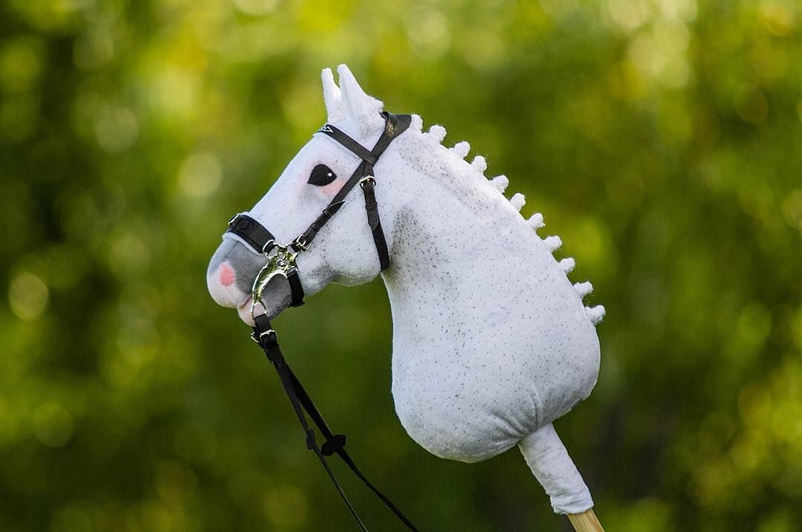

Hobby horsing is a unique sport that combines gymnastics and equine simulation. It originated in Finland and has captured the hearts of many, especially girls and young women.
Hobby horsing involves performing movements and sequences similar to show jumping and dressage, but without real horses. Instead, participants use hobby horses, also known as stick horses.
This sport is more than just a fun activity. It offers a creative outlet, encourages physical activity, and provides a space for like-minded individuals to connect and form a community.
Hobby horsing has gained enough traction to host competitions and events. Enthusiasts can showcase their skills and creativity through performances and even compete in hobby horse championships.
Whether you're an aspiring hobby horse rider or just curious to try something new, hobby horsing could be your next adventure. Grab your stick horse and join the herd!